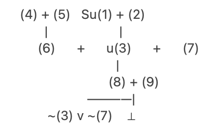
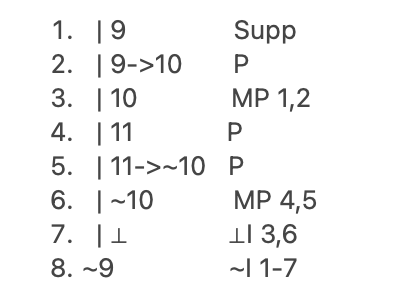
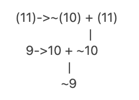

Published May 06, 2026
In ..., Bernard Williams outlines the following argument about nuclear deterrence:
Suppose someone is justified in intending to do a certain thing if certain circumstances arise. For instance, he's justified in carrying a gun, and intending to use it if he's attacked by bandits. Now if that is so, then - the argument says - it must follow that if he were to be attacked, he would then be justified in using the gun. So with nuclear deterrence.
The principle of deterrence is based on having a certain kind of intention: that if we were attacked, we would then retaliate with nuclear weapons. That is the intention we in the west announce to the world in declaring this policy.
But now the same argument about intentions is supposed to apply. If we are justified in intending to let off nuclear weapons if attacked, then (the argument goes) it must be that if we were attacked, we would then be justified in actually letting off nuclear weapons. But if no one is ever justified in letting off nuclear weapons, then this can't be so. The strategy based on such threats must itself be immoral. That is the simple moral argument.
William's argument William's is outlining here can be formulated as follows:
u(1) Suppose someone is justified in carrying a gun, and intending to use it if he's attacked by bandits.
(2) If (1), then it follows that if he were to be attacked, he would then be justified in using the gun.
u(3) He would be justified in using the gun.
(4) In declaring the policy of nuclear deterrence, we in the west announce to the world the same intention: that if we were attacked, we would then retaliate with nuclear weapons.
(5) If (4), then the justification for the principle of deterrence is based on the same kind of intention that justified him using the gun.
(6) The justification for the principle of deterrence is based on the same kind of intention that justified him using the gun.
(7) If (i) the justification for the principle of deterrence is based on the same kind of intention that justified him using the gun, and (ii) he is justified in using the gun, then we would be justified in letting off nuclear deterrence if attacked.
(8) We would be justified in letting off nuclear deterrence if attacked.
(9) But no one is ever justified in letting off nuclear weapons.
This argument can be diagrammed as follows:

Williams then goes on to offer his objection to the argument, which I reprint in full here:
I accept the factual basis of the simple moral argument. But I do not think that things can be as simple as this argument makes out. It implies, after all, that there is no moral difference between running a deterrent strategy on the one hand, and intentionally - indeed, wantonly - starting a nuclear war on the other, so that the first is as totally evil as the second. Moreover, we are supposed to be able to see this absolutely in the abstract, without any reference to what we are trying to deter, or other facts about the world in which we are doing all this.
I simply cannot believe that; I think that, on reflection, one can see that, purely in the abstract, the argument does not follow. What about probability, for instance? If it were certain that threatening some dreadful thing would prevent some great crime or suffering, would that really leave the threat as morally no better than the dreadful deed which I wouldn't need to perform? I am not suggesting that such certainty exists in the case of nuclear deterrence. The point is simply whether the argument works in the abstract.
William's argument is that (9) implies:
(10) We can judge nuclear policy absolutely in the abstract, without any reference to what we are trying to deter, or other facts about the world in which we are doing all this.
But he argues (10) is false because we can all imagine a scenario where it were certain that threatening some dreadful thing would prevent some great crime or suffering and this is enough to show (10) false. Call this:
(11) If we were certain that threatening some dreadful thing would prevent some great crime or suffering, then the threat would be morally better than the dreadful deed which I wouldn't need to perform.
His entire chain of reasoning can be modelled as follows:

This is read as: Suppose (9). Because (9)->(10), we must concede (10). But (11) is clearly true, and (11) implies (~10). So we have both (10) and its contradiction. From this we can infer ~(9).
This Fitch proof can be diagrammed like this:
